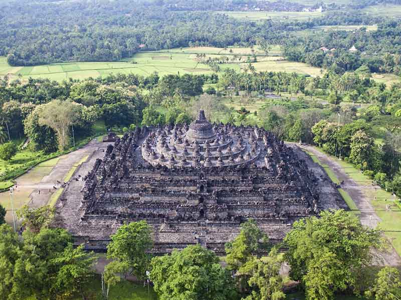
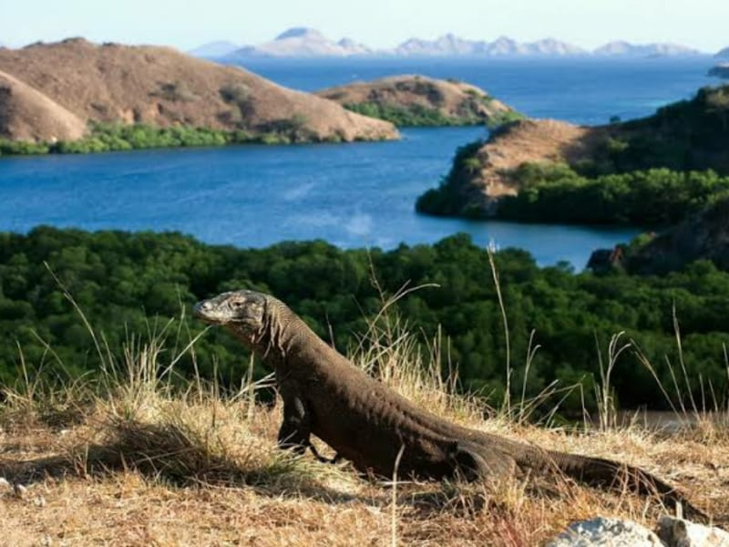
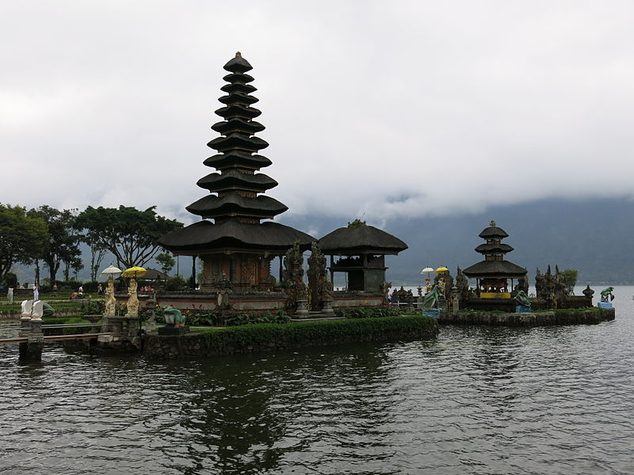

Borobudur adalah candi atau kuil Buddha terbesar di dunia, sekaligus salah satu monumen Buddha terbesar di dunia.

Pulau Komodo termasuk salah satu kawasan Taman Nasional Komodo yang dikelola oleh Pemerintah Pusat.

Pura Ulun Danu artinya pura yang berada ditepi danau, pura ini ditujukan untuk pemujaan Tuhan Yang Maha Esa.